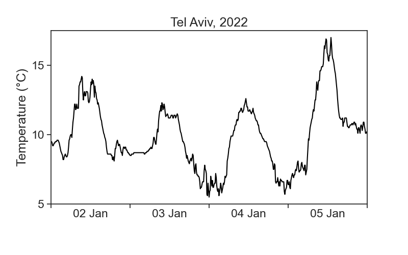
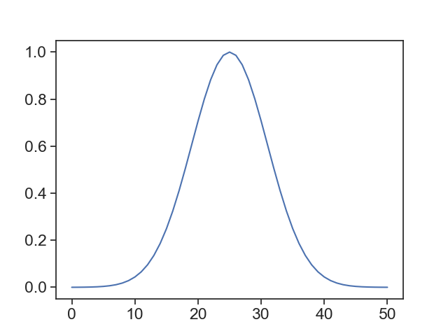

10 convolution
Running windows of different shapes (kernels)
This is the temperature for Tel Aviv, between 2 and 5 of January 2022. Data is in intervals of 10 minutes, and was downloaded from the Israel Meteorological Service.

We see that the temperature curve has a rough profile. Can we find ways of getting smoother curves?
10.1 convolution
Convolution is a fancy word for averaging a time series using a running window. We will use the terms convolution, running average, and rolling average interchangeably. See the animation below. We take all temperature values inside a window of width 500 minutes (51 points), and average them with equal weights. The weights profile is called kernel.
The pink curve is much smoother than the original! However, the running average cannot describe sharp temperature changes. If we decrease the window width to 200 minutes (21 points), we get the following result.
There is a tradeoff between the smoothness of a curve, and its ability to describe sharp temporal changes.
10.2 kernels
We can modify our running average, so that values closer to the center of the window have higher weights, and those further away count less. This is achieved by changing the weight profile, or the shape of the kernel. We see below the result of a running average using a triangular window of base 500 minutes (51 points).
Things can get as fancy as we want. Instead of a triangular kernel, which has sharp edges, we can choose a smoother gaussian kernel, see the difference below. We used a gaussian kernel with 60-minute standard deviation (the window in the animation is 4 standard deviations wide).
10.3 math
The definition of a convolution between signal \(f(t)\) and kernel \(k(t)\) is
\[ (f * k)(t) = \int f(\tau)k(t-\tau)d\tau. \]
The expression \(f*k\) denotes the convolution of these two functions. The argument of \(k\) is \(t-\tau\), meaning that the kernel runs from left to right (as \(t\) does), and at every point the two signals (\(f\) and \(k\)) are multiplied together. It is the product of the signal with the weight function \(k\) that gives us an average. Because of \(-\tau\), the kernel is flipped backwards, but this has no effect to symmetric kernels, like to ones in the examples above. Finally, the actual running average is not the convolution, but
\[ \frac{(f * k)(t)}{\displaystyle \int k(t)dt}. \]
Whenever the integral of the kernel is 1, then the convolution will be identical with the running average.
10.4 numerics
Running averages are very common tools in time-series analysis. The pandas package makes life quite simple. For example, in order to calculate the running average of temperature using a rectangular kernel, one writes
window=20means that the width of the window is 20 points. Pandas lets us define a window width in time units, for example,window='120min'.center=Trueis needed in order to assign the result of averaging to the center of the window. Make itFalseand see what happens.mean()is the actual calculation, the average of temperature over the window. Therollingpart does not compute anything, it just creates a moving window, and we are free to calculate whatever we want. Try to calculate the standard deviation or the maximum, for example.
It is implicit in the command above a “rectangular” kernel. What if we want other shapes?
10.4.1 gaussian
(
df['temperature'].rolling(window=window_width,
center=True,
win_type="gaussian")
.mean(std=std_gaussian)
)where
window_widthis an integer, number of points in your windowstd_gaussianis the standard deviation of your gaussian, measured in sample points, not time!
For instance, if we have measurements every 10 minutes, and our window width is 500 minutes, then window_width = 500/10 + 1 (first and last included). If we want a standard deviation of 60 minutes, then std_gaussian = 6. The gaussian kernel will look like this:

You can take a look at various options for kernel shapes here, provided by the scipy package. The graph above was achieved by running:
10.4.2 triangular
Same idea as gaussian, but simpler, because we don’t need to think about standard deviation.
10.5 which window shape and width to choose?
🤷♂️
Sorry, there is not definite answer here… It really depends on your data and what you need to do with it. See below a comparison of all examples in the videos above.

One important question you need to ask is: what are the time scales associated with the processes I’m interested in? For example, if I’m interested in the daily temperature pattern, getting rid of 1-minute-long fluctuations would probably be ok. On the other hand, if we were to smooth the signal so much that all that can be seen are the temperature changes between summer and winter, then my smoothing got out of hand, and I threw away the very process I wanted to study.
All this is to say that you need to know in advance a few things about the system you are studying, otherwise you can’t know what is “noise” that can be smoothed away.